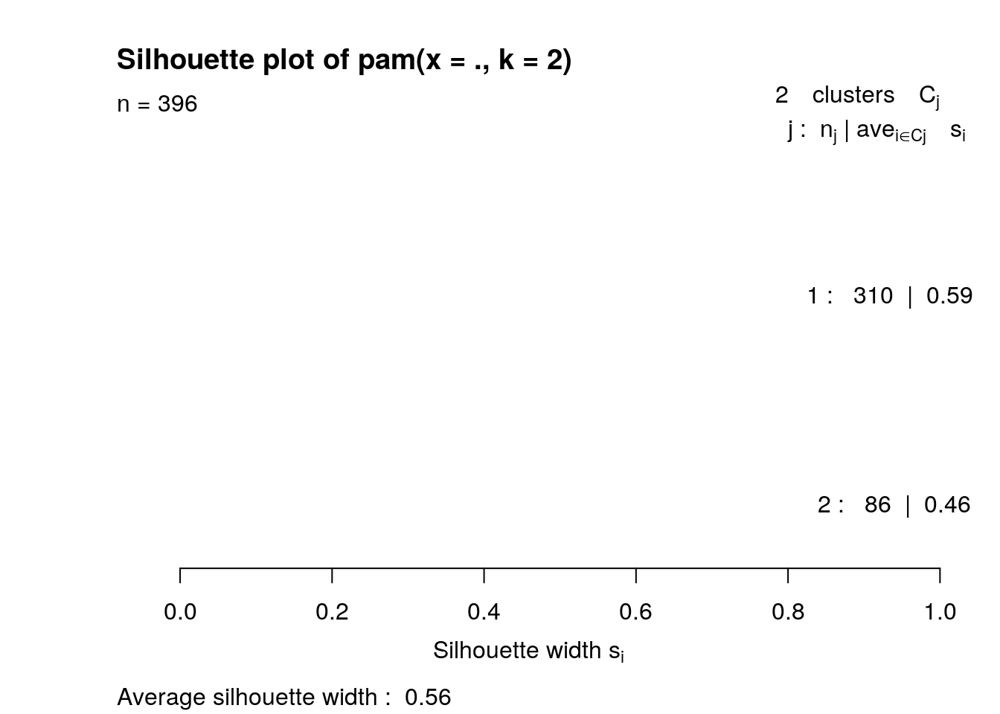

January 1, 0001
Uyen Le, utl243
Introduction
The two datasets chosen were taken from the 'fivethirtyeight' package. As the NBA season was coming to an end, I thought it would be interesting to look into data on the NBA. One of the dataset chosen was a statistical model draft projection system model of the top 50 ranking NBA players by ESPN's Stats & Information Group. The model assessses the probability that a player's early-career that will land him in the categories of superstar, role player, starter, and bust. The 5 positions are center, power forward, point guard, small forward, and shooting guard. The second dataset was on whether NBA players have tattoos. Seeing whether the players have tattoos with their projected stats was something that was interesting.
library(tidyverse)
NBA2015 <- read_csv("/stor/home/utl243/NBA2015.csv")
NBAtat <- read_csv("/stor/home/utl243/NBAtat.csv")Joining
NBA2015 <- NBA2015 %>% select(player, 2, 6, 8, 9)
NBAjoin <- NBA2015 %>% full_join(NBAtat, by = c(player = "player_name"))
NBAjoin <- NBAjoin[, c(1, 6, 2:5)]
head(NBAjoin)## # A tibble: 6 x 6
## player tattoos position superstar role_player bust
## <chr> <lgl> <chr> <dbl> <dbl> <dbl>
## 1 Karl-Anthony Towns NA C 0.135 0.163 0.275
## 2 Justise Winslow NA SF 0.0835 0.177 0.229
## 3 Stanley Johnson NA SF 0.0678 0.278 0.230
## 4 Jahlil Okafor NA C 0.0587 0.236 0.296
## 5 D`Angelo Russell NA PG 0.152 0.0966 0.409
## 6 Dakari Johnson NA C 0.0213 0.418 0.194From the NBA2015 dataset (projection model dataset), there were a total of 10 variables and 5 were removed. The 'id' variable was removed because it was repetitive from the 'player' variable. The draft year variable was also removed because I was not interested in the year. Other variables including 'projected_spm' and 'starter' were removed and potential problems include the correlation being affected. The tattoos dataset contained 2 variables and none was dropped. After removing some columns, the two datasets were joined by using 'full_join.' A full join was done because I didn't want any data to be dropped. The 'tattoos' variable were moved to the front to allow for easier visual of the data.
Wrangling
A) Count/removal of NA's
# count of NA's
NBAjoin %>% select(everything()) %>% summarize_all(funs(sum(is.na(.))))## # A tibble: 1 x 6
## player tattoos position superstar role_player bust
## <int> <int> <int> <int> <int> <int>
## 1 0 694 243 243 243 243# proportions of NA's
NBAjoin %>% summarize_all(function(x) mean(!is.na(x)))## # A tibble: 1 x 6
## player tattoos position superstar role_player bust
## <dbl> <dbl> <dbl> <dbl> <dbl> <dbl>
## 1 1 0.479 0.818 0.818 0.818 0.818# removal of NA's
NBAjoin <- NBAjoin %>% na.omit()After joining the dataset, "player" had 0 NA's or 100% of the data are not NA's, "tattoos" had 694 or 47.9% of the data are not NA's, "position," "superstar," "role_player," and "bust" had 243 NA's each or 81.8% of the data are not NA's. All NA's were then removed and saved into the dataset.
B) Mutate/ adding column
NBAjoin <- NBAjoin %>% mutate(`superstar*role_player` = ((superstar *
role_player) * 100))
head(NBAjoin)## # A tibble: 6 x 7
## player tattoos position superstar role_player bust `superstar*role_pla…
## <chr> <lgl> <chr> <dbl> <dbl> <dbl> <dbl>
## 1 Josh Smith TRUE C 0 0.382 0.591 0
## 2 Marcus Thor… TRUE SG 0.000489 0.390 0.588 0.0191
## 3 Victor Olad… FALSE SG 0.160 0.175 0.236 2.80
## 4 Otto Porter FALSE SF 0.112 0.128 0.261 1.43
## 5 Alex Len FALSE C 0.0714 0.246 0.282 1.75
## 6 Anthony Ben… TRUE PF 0.0659 0.203 0.344 1.34A new variable was added by using 'mutate' by multiplying "superstar" and "role_player," and the result of that was mutiplied by 100 to get the probability of becoming a superstar and a role player shown in percentages.
C) Statistics
# overall mean
NBAjoin %>% select(4, 5, 6) %>% summarize_all(mean)## # A tibble: 1 x 3
## superstar role_player bust
## <dbl> <dbl> <dbl>
## 1 0.0218 0.336 0.448# overall standard deviation
NBAjoin %>% select(4, 5, 6) %>% summarize_all(sd)## # A tibble: 1 x 3
## superstar role_player bust
## <dbl> <dbl> <dbl>
## 1 0.0374 0.0919 0.110# statistical data for 'superstar' grouped by 'tattoos' and
# 'position'
NBA_stats_super <- NBAjoin %>% group_by(tattoos, position) %>%
summarize(median_super = median(superstar, na.rm = T), mean_super = mean(superstar,
na.rm = T), n_super = n(), sd_super = sd(superstar, na.rm = T),
se_super = sd_super/sqrt(n_super))
head(NBA_stats_super)## # A tibble: 6 x 7
## # Groups: tattoos [2]
## tattoos position median_super mean_super n_super sd_super se_super
## <lgl> <chr> <dbl> <dbl> <int> <dbl> <dbl>
## 1 FALSE C 0.00308 0.0123 27 0.0220 0.00423
## 2 FALSE PF 0.00240 0.0206 44 0.0414 0.00624
## 3 FALSE PG 0.00306 0.0249 37 0.0464 0.00763
## 4 FALSE SF 0.00221 0.0184 38 0.0307 0.00498
## 5 FALSE SG 0.00772 0.0351 28 0.0534 0.0101
## 6 TRUE C 0.00304 0.0205 21 0.0368 0.00804NBA_stats_super %>% summarize_all(mean)## # A tibble: 2 x 7
## tattoos position median_super mean_super n_super sd_super se_super
## <lgl> <dbl> <dbl> <dbl> <dbl> <dbl> <dbl>
## 1 FALSE NA 0.00370 0.0223 34.8 0.0388 0.00663
## 2 TRUE NA 0.00423 0.0216 44.4 0.0352 0.00555# statistical data for 'role_player' grouped by 'tattoos' and
# 'position'
NBA_stats_role <- NBAjoin %>% group_by(tattoos, position) %>%
summarize(median_role = median(role_player, na.rm = T), mean_role = mean(role_player,
na.rm = T), n_role = n(), sd_role = sd(role_player, na.rm = T),
se_role = sd_role/sqrt(n_role))
head(NBA_stats_role)## # A tibble: 6 x 7
## # Groups: tattoos [2]
## tattoos position median_role mean_role n_role sd_role se_role
## <lgl> <chr> <dbl> <dbl> <int> <dbl> <dbl>
## 1 FALSE C 0.380 0.364 27 0.0608 0.0117
## 2 FALSE PF 0.364 0.346 44 0.0905 0.0136
## 3 FALSE PG 0.333 0.299 37 0.0944 0.0155
## 4 FALSE SF 0.381 0.343 38 0.101 0.0163
## 5 FALSE SG 0.376 0.346 28 0.0977 0.0185
## 6 TRUE C 0.348 0.327 21 0.0844 0.0184NBA_stats_role %>% summarize_all(mean)## # A tibble: 2 x 7
## tattoos position median_role mean_role n_role sd_role se_role
## <lgl> <dbl> <dbl> <dbl> <dbl> <dbl> <dbl>
## 1 FALSE NA 0.367 0.340 34.8 0.0888 0.0151
## 2 TRUE NA 0.348 0.331 44.4 0.0888 0.0139# statistical data for 'bust' grouped by 'tattoos' and
# 'position'
NBA_stats_bust <- NBAjoin %>% group_by(tattoos, position) %>%
summarize(median_bust = median(bust, na.rm = T), mean_bust = mean(bust,
na.rm = T), n_bust = n(), sd_bust = sd(bust, na.rm = T),
se_bust = sd_bust/sqrt(n_bust))
head(NBA_stats_bust)## # A tibble: 6 x 7
## # Groups: tattoos [2]
## tattoos position median_bust mean_bust n_bust sd_bust se_bust
## <lgl> <chr> <dbl> <dbl> <int> <dbl> <dbl>
## 1 FALSE C 0.413 0.431 27 0.129 0.0249
## 2 FALSE PF 0.450 0.445 44 0.128 0.0193
## 3 FALSE PG 0.521 0.491 37 0.114 0.0188
## 4 FALSE SF 0.445 0.442 38 0.107 0.0174
## 5 FALSE SG 0.426 0.437 28 0.0982 0.0186
## 6 TRUE C 0.428 0.454 21 0.140 0.0305NBA_stats_bust %>% summarize_all(mean)## # A tibble: 2 x 7
## tattoos position median_bust mean_bust n_bust sd_bust se_bust
## <lgl> <dbl> <dbl> <dbl> <dbl> <dbl> <dbl>
## 1 FALSE NA 0.451 0.449 34.8 0.115 0.0198
## 2 TRUE NA 0.435 0.447 44.4 0.107 0.0173# min and max for numeric variables filtered by 'tattoos' and
# grouped by 'position'
NBAjoin %>% filter(tattoos == "TRUE") %>% group_by(position) %>%
summarize(min_super = min(superstar, na.rm = T), min_role = min(role_player,
na.rm = T), min_bust = min(bust, na.rm = T), max_super = max(superstar,
na.rm = T), max_role = max(role_player, na.rm = T), max_bust = max(bust,
na.rm = T)) %>% arrange(min_super) %>% head()## # A tibble: 5 x 7
## position min_super min_role min_bust max_super max_role max_bust
## <chr> <dbl> <dbl> <dbl> <dbl> <dbl> <dbl>
## 1 C 0 0.164 0.245 0.126 0.465 0.730
## 2 PF 0 0.109 0.218 0.146 0.516 0.744
## 3 SF 0 0.123 0.250 0.110 0.461 0.728
## 4 SG 0 0.137 0.238 0.133 0.486 0.637
## 5 PG 0.000105 0.0996 0.303 0.145 0.480 0.663The overall mean for the probability for 'superstar' is 0.02, for 'role_player' is 0.34, and for 'bust' is 0.45, on average. The overall standard deviation for the probability for 'superstar' is 0.04, for 'role_player' is 0.04, and for 'bust' is 0.11, on average. Various summary statistics were computed for each numeric variables. The statistics for each variable were grouped by the two categorical variables, 'position' and 'tattoos.' For the variable 'superstar' with no tattoos, the average medium was 0.37%, for the count it was 34.8, and the standard error was 0.007. For the variable 'superstar' with tattoos, the average medium was 0.42%, for the count it was 44.4, and the standard error was 0.006. For the variable 'role_player' with no tattoos, the average medium was 36.7% and the standard error was 0.015. For the variable 'role_player' with tattoos, the average medium was 34.8% and the standard error was 0.014. For the variable 'bust' with no tattoos, the average medium was 45.1% and the standard error was 0.019. For the variable 'bust' with tattoos, the average medium was 43.5% and the standard error was 0.017. The minimum and maximum values for each variable were also computed and was filtered by players with tattoos.
Correlation matrix
NBA_nums <- NBAjoin %>% select_if(is.numeric)
cor(NBA_nums)## superstar role_player bust superstar*role_player
## superstar 1.0000000 -0.7964630 -0.5656733 0.9428814
## role_player -0.7964630 1.0000000 0.2690131 -0.7142192
## bust -0.5656733 0.2690131 1.0000000 -0.6298824
## superstar*role_player 0.9428814 -0.7142192 -0.6298824 1.0000000The two variables that were most correlated were 'superstar' and 'role_player' with a negative correaltion of -0.796, and the variables least correlated were 'bust' and role_player' with a positive correaltion of 0.269.
Tidying
# reshape statistical data for 'bust'
NBA_stats_bustpivot <- NBA_stats_bust %>% pivot_longer(contains("_")) %>%
separate(name, into = c("stat", "var"), sep = "_") %>% pivot_wider(names_from = "var",
values_from = "value")
# reshape statistical data for 'role_player'
NBA_stats_rolepivot <- NBA_stats_role %>% pivot_longer(contains("_")) %>%
separate(name, into = c("stat", "var"), sep = "_") %>% pivot_wider(names_from = "var",
values_from = "value")
# reshape statistical data for 'superstar'
NBA_stats_superpivot <- NBA_stats_super %>% pivot_longer(contains("_")) %>%
separate(name, into = c("stat", "var"), sep = "_") %>% pivot_wider(names_from = "var",
values_from = "value")
# joined statistical data
NBA_stats_bustpivot %>% full_join(NBA_stats_rolepivot, by = "stat") %>%
inner_join(NBA_stats_superpivot, by = "stat") %>% select(-1,
-2, -5, -6, -8, -9, ) %>% head()## # A tibble: 6 x 4
## stat bust role super
## <chr> <dbl> <dbl> <dbl>
## 1 median 0.413 0.380 0.00308
## 2 median 0.413 0.380 0.00240
## 3 median 0.413 0.380 0.00306
## 4 median 0.413 0.380 0.00221
## 5 median 0.413 0.380 0.00772
## 6 median 0.413 0.380 0.00304The statistical data was rearranged by using both 'pivot_wider' and "pivot_longer' to show the statisical summary for each variable. The variables were separated from its statistical data into two separate columns. After the data for each variable was reshaped, all three data was joined by using 'full_join' to have all the statistical summaries into one datatset. Some variables such as 'tattoos' and 'position' were removed from the joined data to allow for a cleaner visual.
Visualizing
A) Correlation heatmap
NBAjoin %>% select_if(is.numeric) %>% cor %>% as.data.frame %>%
rownames_to_column %>% pivot_longer(-1) %>% ggplot(aes(rowname,
name, fill = value)) + geom_tile() + geom_text(aes(label = round(value,
2))) + xlab("") + ylab("") + coord_flip()The correlation heatmap shows a visual of the correlation between all the numeric variables. The correlation for each variale matches the correlation matrix computed above.
B) ggplots
# recode variables
NBA_names <- NBAjoin %>% mutate(position = recode(position, C = "center",
PF = "power forward", PG = "point guard", SF = "small forward",
SG = "shooting guard"))
# bar chart
ggplot(NBA_names, aes(x = position, y = superstar)) + geom_bar(stat = "summary",
aes(fill = position)) + geom_errorbar(stat = "summary", width = 0.5) +
ylab("% chance of superstar") + ggtitle("Probability of becoming a superstar based on position") +
scale_y_continuous(labels = scales::percent) + scale_fill_brewer() +
theme_minimal()
# scatterplot
ggplot(NBA_names, aes(bust, superstar, color = tattoos)) + geom_point(size = 1) +
xlab("% bust") + ylab("% superstar") + ggtitle("Probabilty of becoming a bust vs. superstar") +
scale_y_continuous(labels = scales::percent, breaks = seq(0,
20, 0.02)) + scale_x_continuous(labels = scales::percent) +
theme_dark()Before beginning to make plots, the dataset was mutated to change the position letters into acutal names to make the graph easier to read. The first plot is a bar chart representing the probability of becoming a Superstar based on the different NBA positions. The position wth the lowest probaility of becoming a Superstar is 'center' and then 'small forward,' 'power forward,' 'shooting guard,' and with 'point guard' having the highest probability of becoming a Superstar. The bar chart includes error bars on each position. The position 'small forward' seems to have the smallest error bar which means it has a low spread. The position 'shooting guard' have the biggest error bar which means that it has a high spread. The exact value of the errors can be shown under 'Statistics' above in 'overall standard deviation.'
The second plot is a scatterplot representing the probability of becoming a Bust versus the probability of becoming a Superstar sorted by whether or not players have tattoos. According to this graph, whether of or not players have tattoos does not affect the chance of becoming a Superstar or Bust. The points indicating the presence of tattoos are scattered/ randomized along the trend between chance of becoming a Bust versus Superstar. The graph starts off with a negative correlation then flattens out. Accordingt o the correlaition matrix comouted above, 'bust and 'superstar' has a correlation of about -0.57, which is neither strong or weak.
Dimensionality Reduction
# process data and scale numeric variables
pam_dataNBA <- NBAjoin %>% select(4:6) %>% scale %>% as.data.frame()
# identify and choosse number of clusters k by using the
# silhouette method
library(cluster)
sil_width <- vector()
for (i in 2:10) {
kms <- kmeans(pam_dataNBA, centers = i)
sil <- silhouette(kms$cluster, dist(pam_dataNBA))
sil_width[i] <- mean(sil[, 3])
}
ggplot() + geom_line(aes(x = 1:10, y = sil_width)) + scale_x_continuous(name = "k",
breaks = 1:10)# PAM cluster analysis
pam2 <- pam_dataNBA %>% pam(2)
pam2## Medoids:
## ID superstar role_player bust
## [1,] 198 -0.4901723 0.4032963 0.3815352
## [2,] 254 1.5412256 -1.5004477 -1.0224317
## Clustering vector:
## [1] 1 1 2 2 2 2 2 1 2 2 1 2 1 1 1 1 1 1 1 1 1 1 1 1 1 1 1 1 1 1 1 1 1 1 1 1 1
## [38] 1 2 2 2 2 2 2 2 2 2 1 1 1 1 1 1 1 1 1 1 1 1 1 1 1 1 1 1 1 1 1 1 1 1 1 1 1
## [75] 1 1 1 1 1 1 1 2 2 2 2 2 1 1 1 1 1 1 1 1 1 1 1 1 1 1
## [ reached getOption("max.print") -- omitted 296 entries ]
## Objective function:
## build swap
## 1.024402 1.011006
##
## Available components:
## [1] "medoids" "id.med" "clustering" "objective" "isolation"
## [6] "clusinfo" "silinfo" "diss" "call" "data"# visualize clusters
pamclust <- pam_dataNBA %>% mutate(cluster = as.factor(pam2$clustering))
library(plotly)
pamclust %>% plot_ly(x = ~superstar, y = ~role_player, z = ~bust,
color = ~cluster, type = "scatter3d", mode = "markers", size = 1)library(GGally)
ggpairs(pamclust, aes(color = cluster))
# summarize clusters
pamclust %>% group_by(cluster) %>% summarize_if(is.numeric, mean,
na.rm = T)## # A tibble: 2 x 4
## cluster superstar role_player bust
## <fct> <dbl> <dbl> <dbl>
## 1 1 -0.453 0.421 0.272
## 2 2 1.63 -1.52 -0.982NBAjoin %>% slice(pam2$id.med)## # A tibble: 2 x 7
## player tattoos position superstar role_player bust `superstar*role_pl…
## <chr> <lgl> <chr> <dbl> <dbl> <dbl> <dbl>
## 1 Terrence Wil… TRUE SG 0.00347 0.373 0.490 0.129
## 2 Joakim Noah FALSE PF 0.0794 0.198 0.335 1.57# average silhouette width
pam2$silinfo$avg.width## [1] 0.5584883# goodness-of-fit
sil_width <- vector()
for (i in 2:10) {
pam_fit <- pam(pam_dataNBA, diss = TRUE, k = i)
sil_width[i] <- pam_fit$silinfo$avg.width
}
ggplot() + geom_line(aes(x = 1:10, y = sil_width)) + scale_x_continuous(name = "k",
breaks = 1:10)plot(pam2, which = 2)
K-means/PAM was used to cluster all the numeric variables (‘superstar, role_player, and ‘bust’). The data was first processed and scaled for the numeric variables. The silhouette method was used to choose the number of clusters, k. The sil_width taken was plotted into a ggplot and it was shown that the ideal number of clusters is 2. PAM was then used to double check the number of clusters and for the cluster analysis. The Medoids in the output shows the 198th and 254th player is the most representative of each cluster. One cluster has a low Superstar probability and high Role player and Bust probabilities. The other cluster has a high Duperstar probability and low Role player and Bust probabilities. The clustering vectors were saved into the dataset and a ggplot was used to visualize the clusters. The ggpairs computed showed that ‘role_player’ and ‘superstar’ has the highest correlation of -0.796. The means were computed for each cluster for each variable. For cluster 1, the mean for ‘superstar’ was -0.45, for ‘role_player’ was 0.42, and for ‘bust’ was 0.27. for cluster 2, the mean for ‘superstar’ was 1.63, for ‘role_player’ was -1.52 and for ‘bust’ was -0.98.
When slicing the dataset to show the PAM with the ID Medoids, it was shown that the 2 clusters could be separated by the player, tattoos, or position. After computing three ggplots coloring by player, tattoos, and position, it was clearly shown that those were not the two clusters. The clusters did not match the original cluster labels so those 3 ggplots were deleted from Markdown. I kept the cluster labeling as “cluster 1” and “cluster 2” because it was unclear how the clusters were separated by a certain variable.
The goodness-of-fit was computed in PAM and it gave an average silhouette width of 0.56. When interpreting this, the average silhouette width falls within 0.51 and 0.70 indicating that a reasonable structure has been found.